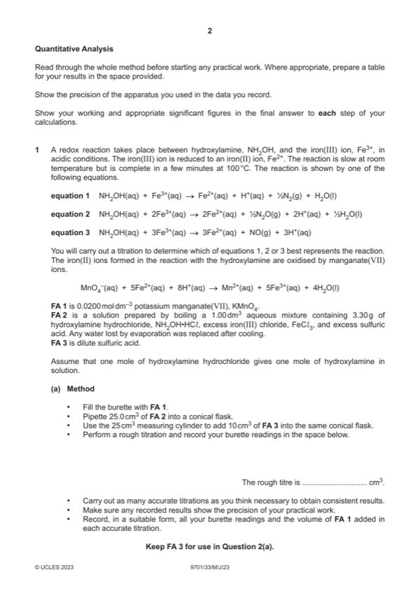
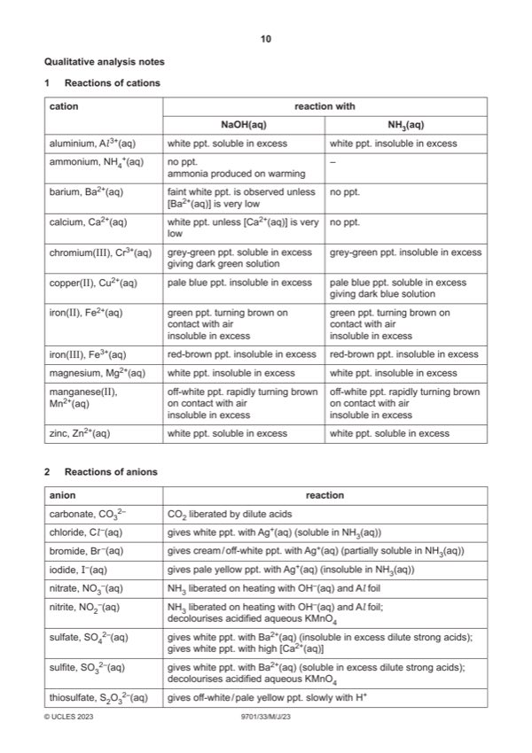

Question 1

Original paper page 2

Original paper page 10
Part 1(a) — solution
- burette readings and titre for rough titration
- 2 2 “box” showing both accurate burette readings
- initial / start and (burette) reading / volume + unit
- final / end and (burette) reading / volume + unit
- titre or volume / FA 1 AND used / added + unit
Mark points
- burette readings and titre for rough titration
- 2 2 “box” showing both accurate burette readings
- initial / start and (burette) reading / volume + unit
- final / end and (burette) reading / volume + unit
- titre or volume / FA 1 AND used / added + unit
Part 1(b) — solution
- Candidate must take the average of two (or more) titres that are within a total spread of not more than 0.20 cm3
- Working / explanation must be shown or ticks must be put next to the two (or more) accurate readings selected
- The mean should be quoted to 2 decimal places (dp) and be rounded to nearest 0.01 cm3
Mark points
- Candidate must take the average of two (or more) titres that are within a total spread of not more than 0.20 cm3
- Working / explanation must be shown or ticks must be put next to the two (or more) accurate readings selected
- The mean should be quoted to 2 decimal places (dp) and be rounded to nearest 0.01 cm3
Part 1(c)(i) — solution
Answer: AND answer given to 3–4 significant figures
- amount of KMnO4 = 0.02 (b) / 1000 mol
Mark points
- amount of KMnO4 = 0.02 (b) / 1000 mol
Part 1(c)(ii) — solution
Answer: AND answer given to 3–4 significant figures
- amount of Fe2+ = 5 (c)(i) mol
Mark points
- amount of Fe2+ = 5 (c)(i) mol
Part 1(c)(iii) — solution
Answer: AND final answer given to 3 or more significant figures
- [M1] Mr(NH2OH•HCl) = 69.5
- [M2] amount of NH2OH•HCl = /69.5 25/1000
Mark points
- [M1] Mr(NH2OH•HCl) = 69.5
- [M2] amount of NH2OH•HCl = /69.5 25/1000
Part 1(c)(iv) — solution
Answer: AND states equation number that fits their data
- mole ratio n(Fe2+) : n(NH2OH•HCl) = (c)(ii) / (c)(iii)
Mark points
- mole ratio n(Fe2+) : n(NH2OH•HCl) = (c)(ii) / (c)(iii)